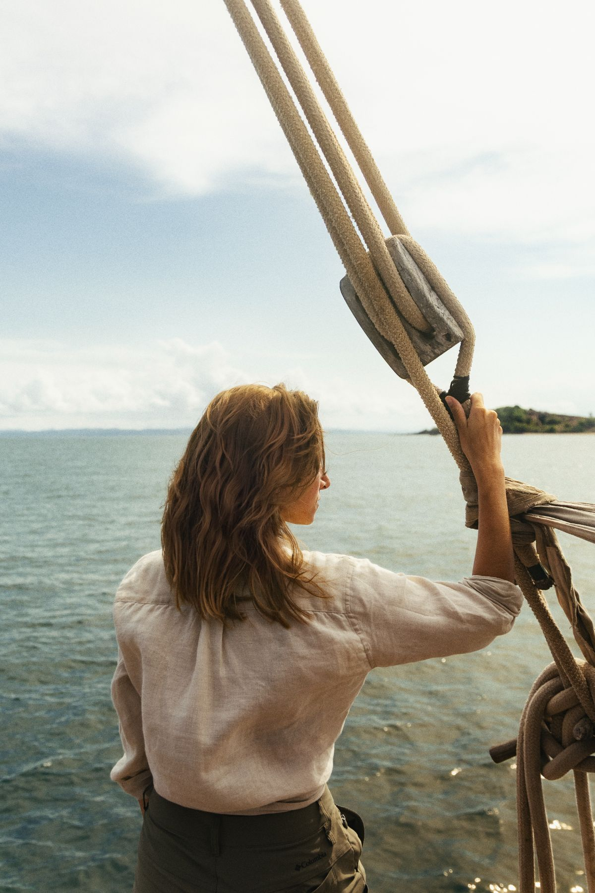
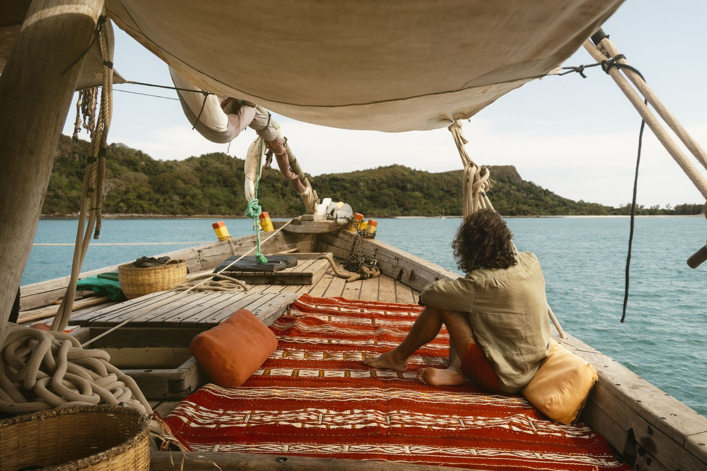
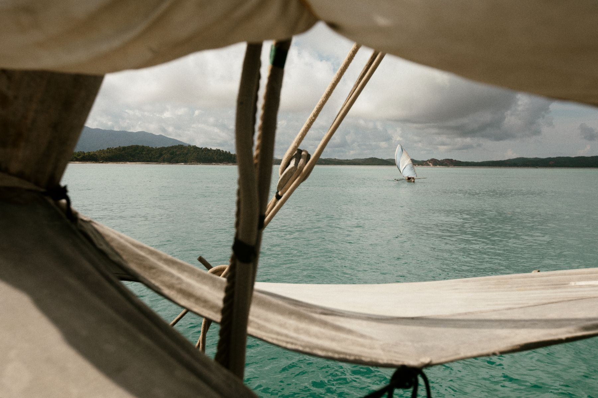
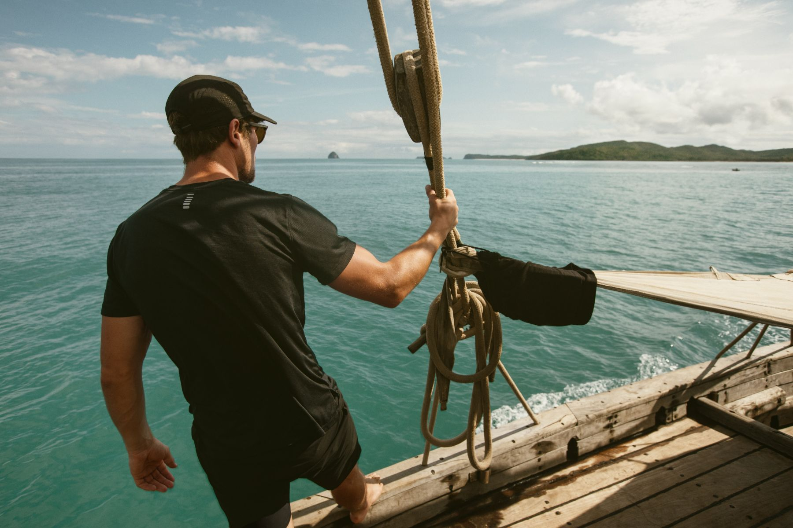
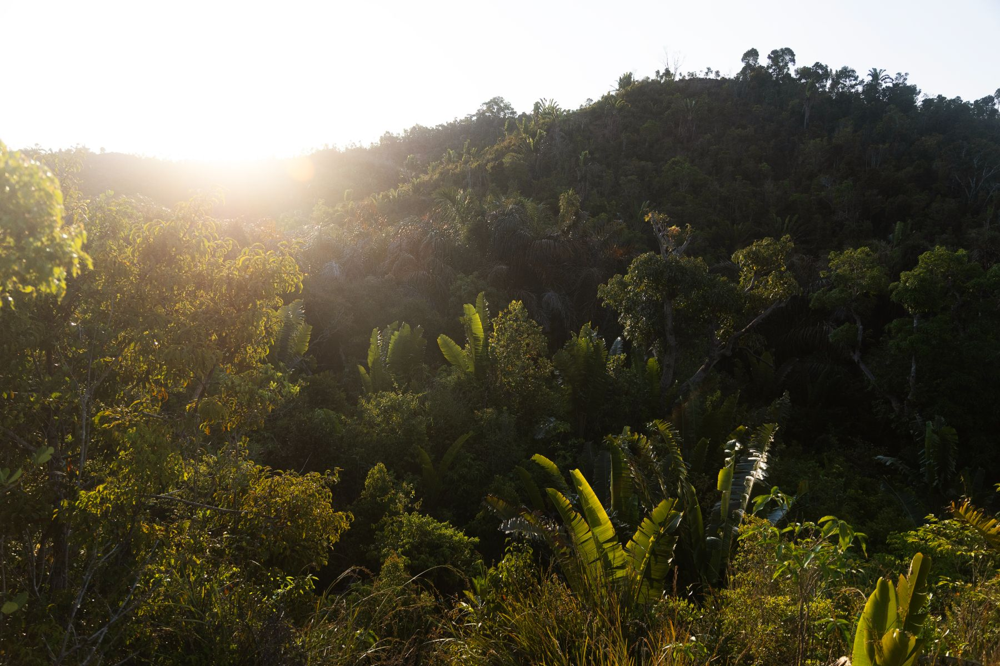
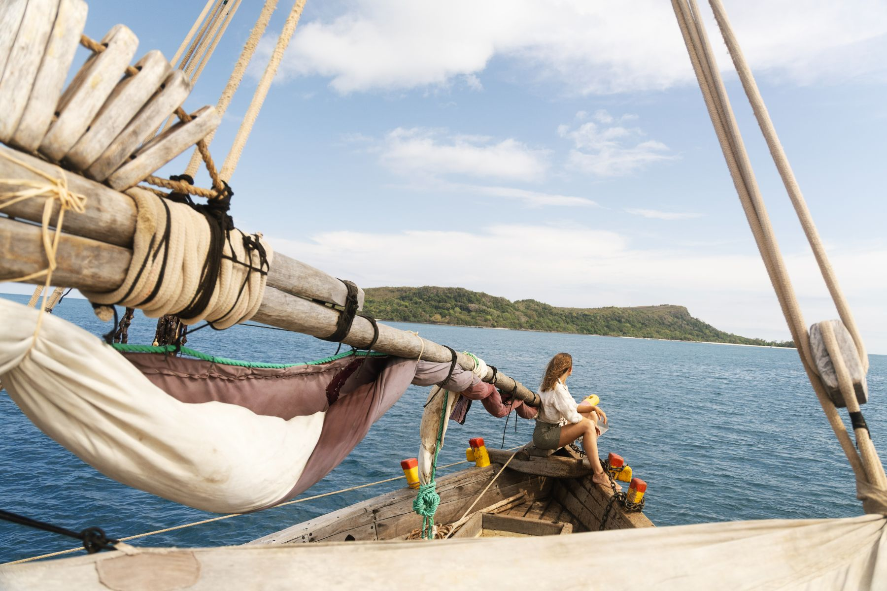
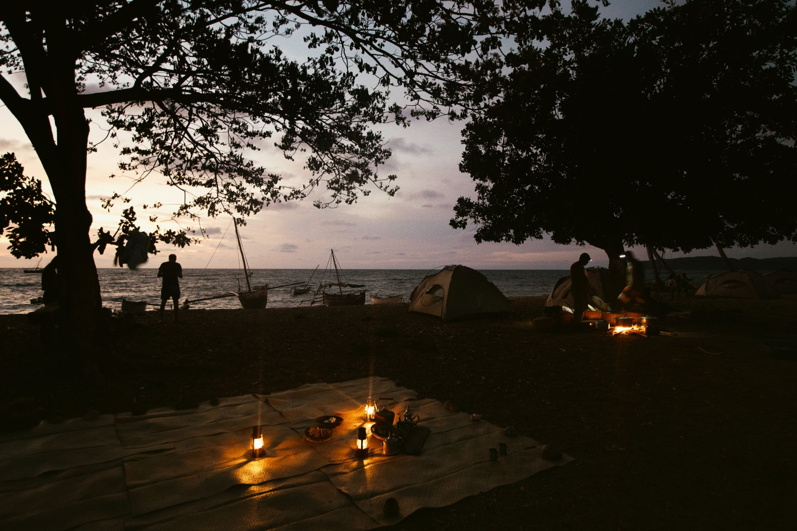

Thomas Cytrynowicz
Documentary
Commissions
Fine art
Lifestyle
About
Contact

Alefa
01 / 07

Alefa
02 / 07

Alefa
03 / 07

Alefa
04 / 07

Alefa
05 / 07

Alefa
06 / 07

Alefa
07 / 07
Next series
Le Jardin du Roy
01
/ 07
Close
‹
›